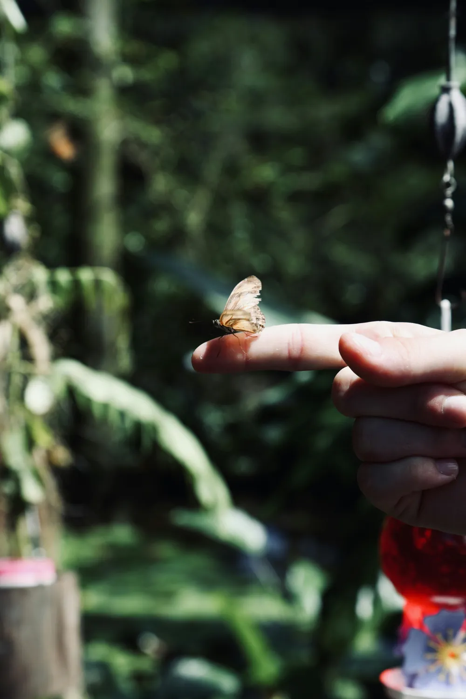
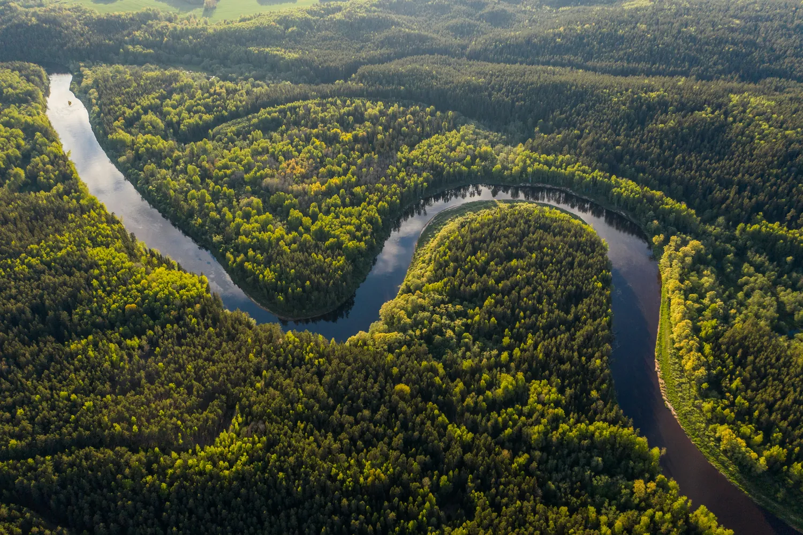
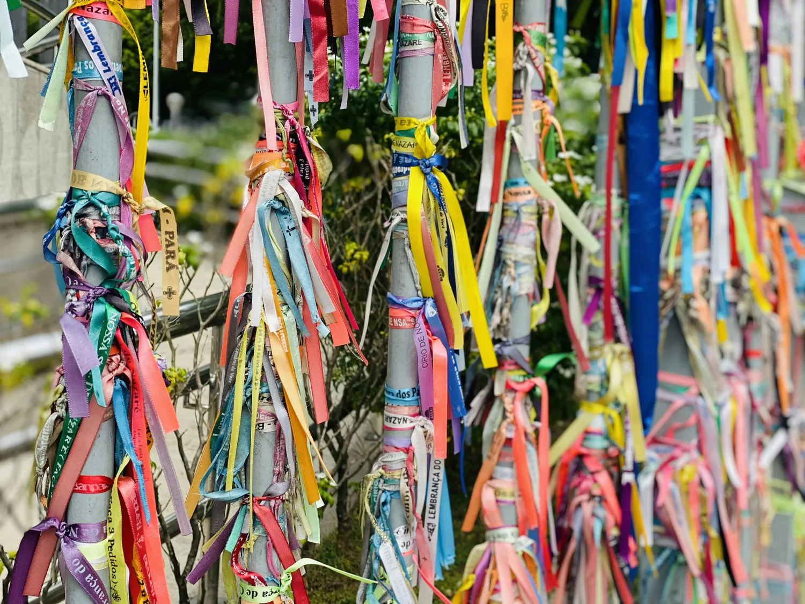
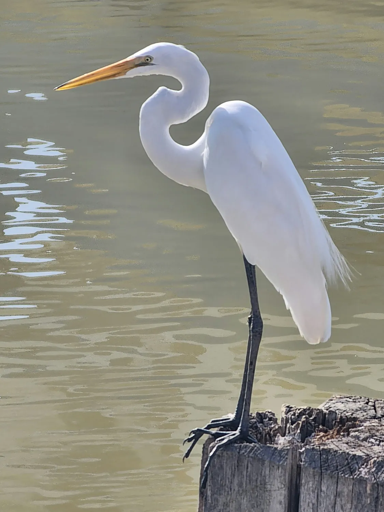
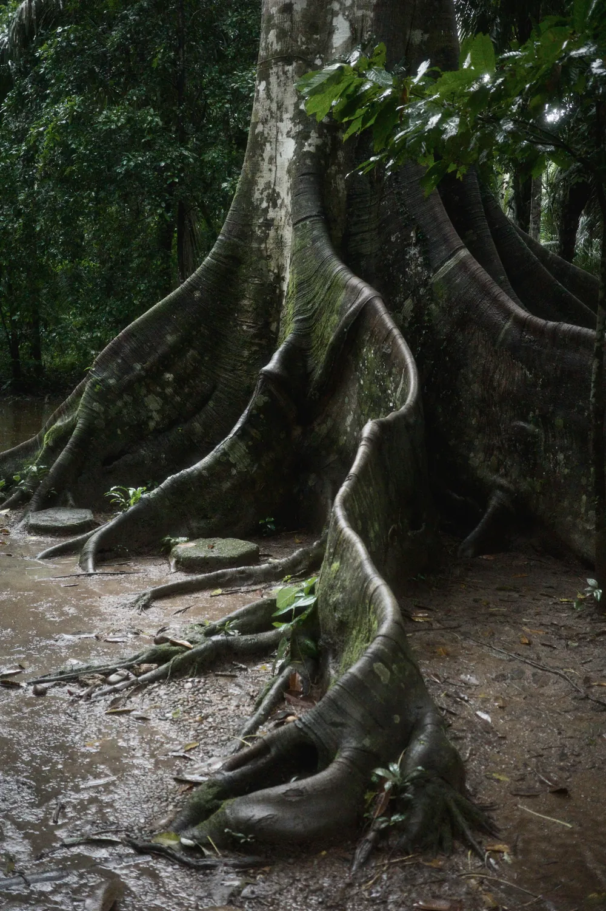
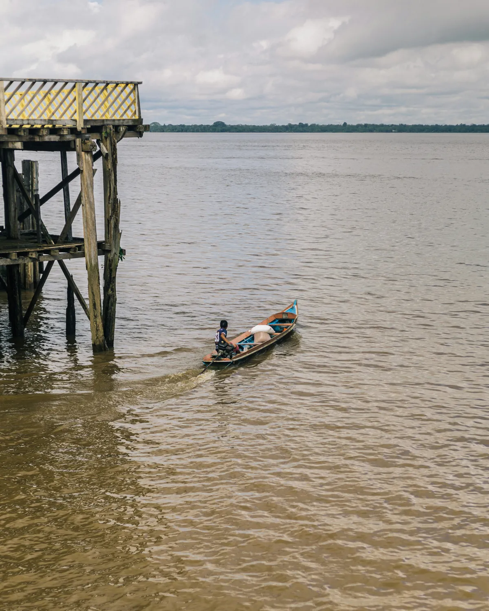
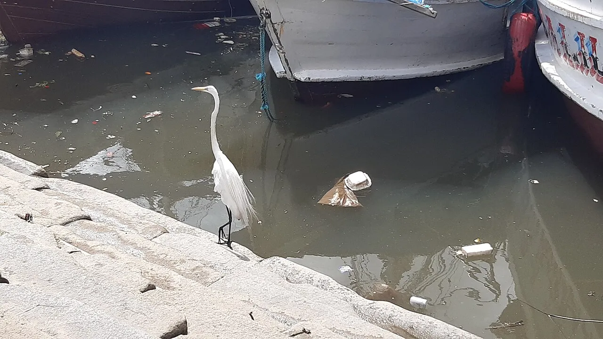

M
Mobilização
Moradores, escolas e famílias que vivem à beira dos rios no centro de cada projeto.
Belém é uma cidade-floresta. Vive entre a chuva, a maré e as árvores. Quando a natureza e a cidade brigam, a água invade as ruas e quem mais sofre é quem tem menos. A MARÉ existe para fazer as duas andarem juntas.

Alagamentos, calçadas e acessibilidade em Belém. Um mapa 3D com 22 pontos já registrados, para levar cada problema a quem pode resolver.
O Maré Cheia tem um site só dele: o mapa 3D interativo abre em outra página.
Entrar no site do Maré Cheia →
Moradores, escolas e famílias que vivem à beira dos rios no centro de cada projeto.

Uma cidade que acolhe todo mundo, como o Círio acolhe a cidade inteira.

Soluções de baixo custo que trabalham com a água e o verde, e não contra eles.
Para escolas, comunidades, empresas e poder público que querem cuidar de Belém de forma sustentável.
Mapeamos pontos críticos e propomos jardins de chuva, limpeza de canais e campanhas.

Projetos de praças, sombra e plantio em escolas e bairros.

Oficinas, rodas de conversa e pesquisas com quem vive no lugar.

Diagnóstico de calçadas, rampas e trapiches, com a lista do que corrigir primeiro.
Arborização, sombra e áreas verdes em escolas e praças.

Lixo e reciclagem, do bueiro entupido à coleta seletiva.
Transporte e mobilidade, nas ruas e nos rios da cidade.
Conversamos com quem pede e com quem vive no lugar.
Visitamos, fotografamos e medimos o problema.
Diagnóstico, prioridades e soluções de baixo custo.
Ajudamos a executar e medimos o resultado.
Tem um problema na sua rua, escola ou comunidade? Conte para a gente. Respondemos com uma proposta de diagnóstico, ou colocamos o ponto no nosso mapa.